게이지 차트
게이지 차트는 대시보드를 작성하는데 유용하게 사용되는 차트 유형입니다.
원형, 반원형, 직선형 모양이 지원되며 데이터 값은 눈금을 가르키는 바늘 혹은 지시자를 통해서 표현합니다.
(반)원형 게이지 차트에는 (반)원형 게이지 내부 공간에 텍스트를 표현할 수 있는 스코어카드형(<Gauge> 노드로 설정)과 스피드미터형(원형: <CircularGauge> 노드로 설정, 반원형: <HalfCircularGauge> 노드로 설정)이 지원됩니다.
직선형 게이지 차트에는 사각형(수평: <HLinearGauge>, 수직: <VLinearGauge>) 게이지와 실린더형(수평: <HCylinderGauge>, 수직: <VCylinderGauge>) 게이지가 지원됩니다.
원형, 반원형 게이지에서 공통적으로 적용되는 속성은 다음과 같습니다.
| 속성명 |
유효값 (*: 기본값) |
설명 |
| minimum |
숫자
기본값: 0
|
게이지의 최소값을 지정합니다.
|
| minimumAngle |
0(*) 과 360 사이의 숫자
|
게이지의 최소값에 해당하는 각도를 지정합니다.
|
| maximum |
숫자
기본값: 100
|
게이지의 최대값을 지정합니다.
|
| maximumAngle |
0 과 360(*) 사이의 숫자
|
게이지의 최대값에 해당하는 각도를 지정합니다.
|
- 주의
스코어카드형 게이지와 스피트미터형 게이지(원형, 반원형)의 각도값
“0” 이 적용되는 위치가 다른 점에 유의하십시요.
스코어카드형 게이지에서 각도값
“0” 의 위치는 12 시 방향이고, 스피트미터형 게이지(원형, 반원형)에서 각도값
“0” 의 위치는 3 시 방향입니다.
원형 스코어카드
스코어카드형 게이지에서는 차트의 내부 공간에 텍스트를 표시하여 차트에 관한 유용한 정보를 사용자에게 제공할 수 있습니다.
게이지의 내부 공간의 크기는 innerRatio 속성을 설정하여 조절할 수 있습니다.
| 속성명 |
유효값 (*: 기본값) |
설명 |
| innerRatio |
0(*) 과 1 사이의 숫자
|
전체 게이지에서 차지하는 내부 공간의 비율을 지정합니다.
게이지의 중심에서 원의 둘레까지(반지름)가 “1” 에 해당합니다.
|
다음은 스코어카드형 게이지 차트를 생성하는 코드와 이를 적용해서 출력한 차트의 예제입니다.
이 예제에서는 게이지의 내부 공간에 텍스트를 표시하기 위해서 <backgroundElements> 속성을 설정하였습니다.
<Gauge minimum="0" maximum="100" minimumAngle="0" maximumAngle="360" innerRatio="0.85" fontSize="53" labelJsFunction="valueFunc" dataTipJsFunction="dataTipFunc" labelYOffset="-20" foregroundColors="[#5587a2]" backgroundColors="[#97d5e0]" color="#333333">
<backgroundElements>
<CanvasElement>
<Label fontWeight="bold" height="23" fontSize="13" horizontalCenter="0" verticalCenter="20" text="Simple Gauge" color="#888888"/>
</CanvasElement>
</backgroundElements>
</Gauge>
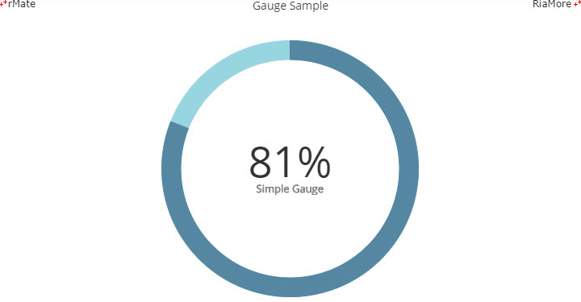
See the CodePen 알메이트 차트 - 원형 스코어카드
반원형 스코어카드
<Gauge> 노드의 maximumAngle 속성을 조절하여 스코어카드형 게이지의 크기를 조절할 수 있습니다.
다음은 maximumAngle 속성값을 “180” 으로 설정하여 반원 모양의 스코어카드형 게이지를 생성하는 코드와 이를 적용해서 출력한 차트의 예제입니다.
이 예제에서는 데이터 값을 표시하는 게이지의 영역(노란색)이 시작되는 위치를 9 시 방향(startAngle = “-90” 혹은 startAngle = “270”)으로 설정하였습니다.
| 속성명 |
유효값 (*: 기본값) |
설명 |
| startAngle |
0(*) 과 360 사이의 값
|
게이지에서 데이터 값의 영역이 시작되는 각도를 지정합니다.
|
- 주의
스코어카드형 게이지와 스피트미터형 게이지(원형, 반원형)의 각도값
“0” 이 적용되는 위치가 다른 점에 유의하십시요.
스코어카드형 게이지에서 각도값
“0” 의 위치는 12 시 방향이고, 스피트미터형 게이지(원형, 반원형)에서 각도값
“0” 의 위치는 3 시 방향입니다.
<Gauge minimum="0" maximum="200" minimumAngle="0" maximumAngle="180" startAngle="-90" height="380" formatter="{cft}" innerRatio="0.85" labelJsFunction="valueLabelFunc" foregroundColors="[#f6a44c]" backgroundColors="[#e8d7c9]" color="#333333" fontSize="53" verticalOriginRatio="0.7" labelYOffset="-50">
<backgroundElements>
<CanvasElement>
<Label fontSize="13" height="17" color="#888888" horizontalCenter="0" verticalCenter="65" text="HALF SIMPLE GAUGE"/>
</CanvasElement>
</backgroundElements>
</Gauge>
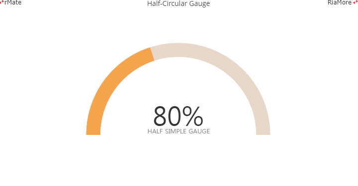
See the CodePen 알메이트 차트 - 반원형 스코어카드
다중값 스코어카드
스코어카드형 게이지에서는 다중값을 표현할 수 있습니다.
이 때 적용되는 데이터의 형식은 레이블과 값이 저장된 객체의 배열이어야 합니다.
다음은 <Gauge> 노드에서 데이터의 레이블과 값이 저장된 필드명을 지정하는 속성에 대한 설명입니다.
| 속성명 |
유효값 (*: 기본값) |
설명 |
| nameField |
텍스트
|
데이터의 레이블이 저장된 필드명을 지정합니다.
|
| valueField |
텍스트
|
데이터 값이 저장된 필드명을 지정합니다.
|
다음은 다중값을 표현하는 스코어카드형 게이지를 생성하는 코드와 이를 적용해서 출력한 차트의 예제입니다.
<Gauge minimum="0" maximum="100" minimumAngle="0" maximumAngle="270" startAngle="-90" nameField="name" valueField="value" innerRatio="0.5" backgroundColors="[#f0f0f0]" foregroundColors="[#5587a2,#20cbc2,#f6a54c]" color="#ffffff" fontSize="20" fontWeight="bold" labelYOffset="-4">
<backgroundElements>
<Box width="100%" height="100%" horizontalAlign="center" verticalAlign="middle">
<SubLegend direction="vertical" fontSize="13" color="#666666" borderStyle="none">
<LegendItem label="English">
<fill>
<SolidColor color="#5587a2"/>
</fill>
</LegendItem>
<LegendItem label="Math">
<fill>
<SolidColor color="#20cbc2"/>
</fill>
</LegendItem>
<LegendItem label="History">
<fill>
<SolidColor color="#f6a54c"/>
</fill>
</LegendItem>
</SubLegend>
</Box>
</backgroundElements>
</Gauge>
var chartData =
[{"name" : "English", "value" : 100},
{"name" : "Math", "value" : 74},
{"name" : "History", "value" : 82}
];
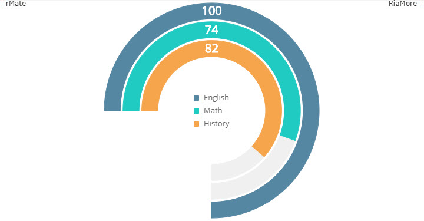
See the CodePen 알메이트 차트 - 다중값 스코어카드
원형 게이지
스피드미터형 게이지는 데이터 값을 바늘이 가르키는 방향으로 표현합니다. 바늘의 모양은 다음 속성들을 이용하여 다양한 형태로 표시가 가능합니다.
| 속성명 |
유효값 (*: 기본값) |
설명 |
| needleBackLengthRatio |
0(*) 과 1 사이의 숫자
|
바늘 커버의 중심을 기준으로 바늘 뒷부분의 길이를 지정합니다.
게이지의 중심에서 원의 둘레까지(반지름)가 “1” 에 해당합니다.
|
| needleCoverFill |
<SolidColor>
|
바늘 커버의 색의 스타일을 지정합니다.
|
| needleCoverRadius |
숫자
기본값: 15
|
바늘 커버의 반지름 크기를 지정합니다.
|
| needleCoverStroke |
<Stroke>
|
바늘 커버 선의 스타일을 지정합니다.
|
| needleFill |
<SolidColor>
|
바늘 색의 스타일을 지정합니다.
|
| needleLengthRatio |
0 과 1 사이의 숫자
기본값: 0.85
|
바늘의 길이를 지정합니다.
게이지의 중심에서 원의 둘레까지(반지름)가 “1” 에 해당합니다.
|
| needlePointStyle |
steeple(*), rounding
|
바늘 포인트의 모양을 지정합니다.
|
| needleStroke |
<Stroke>
|
바늘 선의 스타일을 지정합니다.
|
| needleThickness |
숫자
기본값: 10
|
바늘 선의 두께를 지정합니다.
|
원형 게이지의 모양은 다음 속성들을 이용하여 다양한 형태로 표현이 가능합니다
| 속성명 |
유효값 (*: 기본값) |
설명 |
| frameFill |
<SolidColor>
|
게이지 프레임 색의 스타일을 지정합니다.
|
| frameStroke |
<Stroke>
|
게이지 프레임 선의 색의 스타일을 지정합니다.
|
| tickFill |
<SolidColor>
|
게이지 눈금(tick) 색의 스타일을 지정합니다.
|
| tickStroke |
<Stroke>
|
게이지 눈금(tick) 선의 색의 스타일을 지정합니다.
|
| minorTickFill |
<SolidColor>
|
게이지 보조 눈금(minor tick) 색의 스타일을 지정합니다.
|
| minorTickStroke |
<Stroke>
|
게이지 보조 눈금(minor tick) 선의 색의 스타일을 지정합니다.
|
| outFrameFill |
<SolidColor>
|
showOutFrame 속성값이 “true” 일 때 게이지 프레임 색의 스타일을 지정합니다.
|
| outFrameStroke |
<Stroke>
|
showOutFrame 속성값이 “true” 일 때 게이지 프레임 선의 색의 스타일을 지정합니다.
|
다음은 스피드미터형 게이지 차트를 생성하는 코드와 이를 적용해서 출력한 차트의 예제입니다.
<CircularGauge minimumAngle="30" maximumAngle="330" startAngle="90" labelJsFunction="labelFunc" value="50" interval="10" minorInterval="2" needleLengthRatio="0.7" needleBackLengthRatio="0" valueXOffset="0" valueYOffset="80" tickLabelStyleName="tickText" valueLabelStyleName="valueText" editMode="true" liveDragging="true" bounceAnimating="true" labelGap="10" tickGap="-4" showDataTip="true" needleCoverRadius="6" pointThickness="2" needleThickness="4" majorTickType="triangle">
<frameStroke>
<Stroke color="#f15f5f" weight="10"/>
</frameStroke>
<tickStroke>
<Stroke color="#f15f5f"/>
</tickStroke>
<tickFill>
<SolidColor color="#f15f5f"/>
</tickFill>
</CircularGauge>
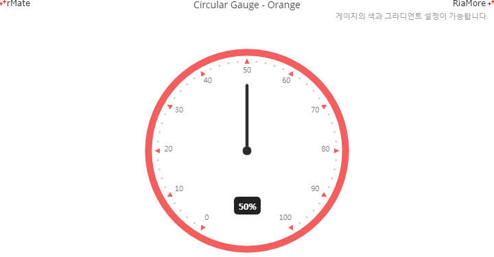
See the CodePen 알메이트 차트 - 원형 게이지
다음은 전체 트랙을 눈금에 따라서 3 가지 범위로 나누고 다른 스타일을 적용한 스피드미터형 게이지 차트를 생성하는 코드와 이를 적용해서 출력한 차트의 예제입니다.
<CircularGauge startAngle="90" minimumAngle="30" maximumAngle="330" minimum="0" maximum="200" labelJsFunction="labelFunc" needleCoverRadius="6" interval="20" minorInterval="5" padding="0" labelGap="14" tickGap="-1" formatter="{numFmt}" tickLabelStyleName="tickText" valueLabelStyleName="valueText" needlePointStyle="steeple" pointThickness="2" needleThickness="4" needleLengthRatio="0.75" editMode="true" showDataTip="true" valueYOffset="80" animationDuration="1000" majorTickType="line" minorTickType="line" minorTickRadius="4" tickRadius="7" showTrackColor="true" trackValues="[0, 120, 160, 200]" trackColors="[#21cbc0,#f8a44c,#8a7860]" trackAlphas="[1,1,1]" trackInnerRadius="0.92" trackOuterRadius="1">
<frameStroke>
<Stroke color="#ffffff" weight="0" alpha="0"/>
</frameStroke>
<tickStroke>
<Stroke color="#ffffff" weight="2"/>
</tickStroke>
<minorTickStroke>
<Stroke color="#ffffff" alpha="0.5"/>
</minorTickStroke>
<needleFill>
<SolidColor color="#000000"/>
</needleFill>
<needleStroke>
<Stroke color="#000000"/>
</needleStroke>
<needleCoverFill>
<SolidColor color="#000000"/>
</needleCoverFill>
<needleCoverStroke>
<Stroke color="#000000"/>
</needleCoverStroke>
</CircularGauge>
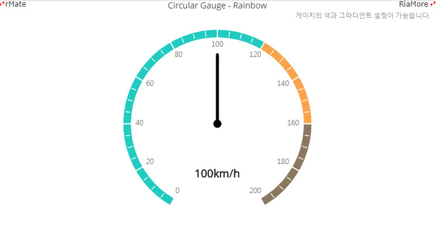
See the CodePen 알메이트 차트 - 스피드미터형 원형 게이지
위에서 설명한 예제에서는 트랙을 3 가지로 나누고 다른 스타일을 설정하기 위해서 다음 속성들을 이용합니다.
| 속성명 |
유효값 (*: 기본값) |
설명 |
| trackValues |
숫자 배열
|
minimum 속성값과 maximum 속성값 사이의 값으로 트랙의 범위들을 지정합니다.
예를 들어 trackValues = “[0,50,80,100]”, minimum = “0”, maximum = “100” 이면, 0 ~ 50, 50 ~ 80, 80 ~ 100 세가지 범위가 설정됩니다.
|
| trackColors |
<Stroke>
|
trackValues 속성에 설정된 각 범위에 순서대로 색을 지정합니다.
|
| trackAlphas |
<SolidColor>
|
trackValues 속성에 설정된 각 범위에 순서대로 색의 투명도를 지정합니다.
|
게이지 프레임의 스타일에 그라디언트 효과를 설정할 수 있습니다. 다음은 이를 위한 코드와 이를 적용해서 출력한 차트의 예제입니다.
<CircularGauge padding="8" startAngle="90" minimumAngle="40" maximumAngle="320" minimum="0" maximum="500" value="200" interval="50" minorInterval="10" formatter="{numFmt}" tickLabelStyleName="tickText" valueLabelStyleName="valueText" editMode="true" majorTickType="circle" liveDragging="false" tickGap="-3" labelGap="-5" showDataTip="false" tickLabelPlacement="outside" tickColor="#1B699A" needleCoverRadius="100" needleThickness="100" pointThickness="0" tickRadius="2" needleLengthRatio="0.9" minorTickType="line" minorTickRadius="5" needlePointStyle="rounding" isValueTop="true" animationDuration="1000" bounceAnimating="true" rotateTickLabel="true" showOutFrame="true" outFrameLabelXOffset="0" outFrameLabelYOffset="0.2">
<frameFill>
<LinearGradient angle="0">
<entries>
<GradientEntry color="#f6af43" ratio="0"/>
<GradientEntry color="#f55a58" ratio="1"/>
</entries>
</LinearGradient>
</frameFill>
...
</CircularGauge>
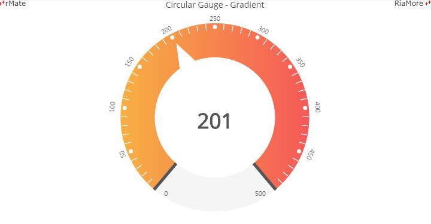
See the CodePen 알메이트 차트 - 스피드미터형 원형 게이지 - 그라디언트 효과
속성명 앞에 second 를 붙여서 보조 트랙을 표시할 수 있습니다.
다음은 이를 이용하여 킬로미터(km)와 마일(mi)을 동시에 게이지에 표시하는 코드와 이를 적용해서출력한 차트의 예제입니다.
<CircularGauge startAngle="90" minimumAngle="30" maximumAngle="330" editMode="true" liveDragging="true" coverRadiusRatio="0.1" needleThickness="4" needleCoverRadius="5" needleLengthRatio="0.7" needleBackLengthRatio="0" needlePointStyle="steeple" pointThickness="2" labelGap="14" valueYOffset="60" tickLabelStyleName="tickText" valueLabelStyleName="valueText" labelJsFunction="labelFunc" minimum="0" maximum="125" interval="25" minorInterval="5" tickGap="-14" tickRadius="4" minorTickRadius="4" minorTickType="line" majorTickType="line" tickLabelPlacement="outside" showTrackColor="true" trackValues="[0,125]" trackColors="[#f6a44c]" trackAlphas="[1]" trackInnerRadius="1.03" trackOuterRadius="1.05" secondTickLabelStyleName="tickText2" secondLabelJsFunction="labelFunc2" secondMinimum="0" secondMaximum="200" showSecondTick="true" secondInterval="50" secondTickGap="8" secondTickRadius="4" secondMinorInterval="10" showSecondMinorTick="true" secondMinorTickGap="8" secondMinorTickRadius="4" secondMinorTickType="line" showSecondValueLabel="true" showSecondTickLabels="true" showSecondTrackColor="true" secondTrackValues="[0,125]" secondTrackColors="[#5587a2]" secondTrackAlphas="[1]" secondTrackInnerRadius="0.94" secondTrackOuterRadius="0.96">
...
<secondMinorTickStroke>
<Stroke color="#5587a2"/>
</secondMinorTickStroke>
<secondTickStroke>
<Stroke color="#5587a2" weight="3"/>
</secondTickStroke>
</CircularGauge>
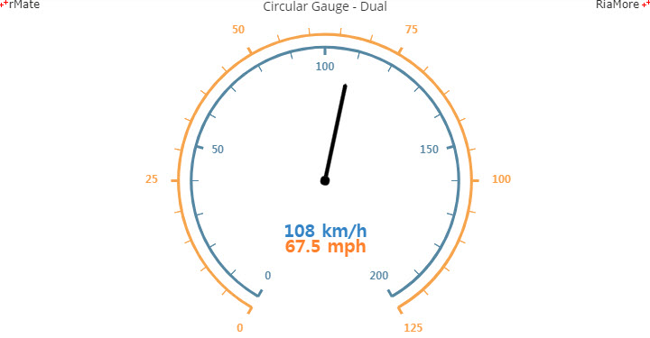
See the CodePen 알메이트 차트 - 스피드미터형 원형 게이지 - 보조 트랙
반원형 게이지
스피드미터형 반원 게이지는 <HalfCircularGauge> 노드를 설정하여 생성할 수 있습니다.
반원형 게이지에서 사용되는 속성들의 적용 방식은 원형 게이지에서 속성들을 적용하는 방식과 동일합니다.
다음은 반원형 게이지를 생성하는 코드와 이를 적용해서출력한 차트의 예제입니다.
<HalfCircularGauge startAngle="165" minimumAngle="0" maximumAngle="210" minimum="0" maximum="500" interval="100" minorInterval="25" formatter="{numFmt}" editMode="false" liveDragging="true" showDataTip="true" valueXOffset="0" valueYOffset="0" isValueTop="true" tickLabelStyleName="tickText" valueLabelStyleName="valueLabelStyle" needleCoverRadius="20" needleThickness="20" pointThickness="0" needleLengthRatio="0.7" needlePointStyle="steeple" needleBackLengthRatio="0" tickGap="0" labelGap="15" tickLabelPlacement="outside" majorTickType="line" tickRadius="12" minorTickType="line" minorTickRadius="10" showTrackColor="true" trackValues="[0,100,200,300,400,500]" trackColors="[#f35f5f,#f6a54c,#b7e2ac,#5ece9e,#5587a2]" trackAlphas="[1,1,1,1,1]" trackInnerRadius="0.87" trackOuterRadius="1">
...
</HalfCircularGauge>
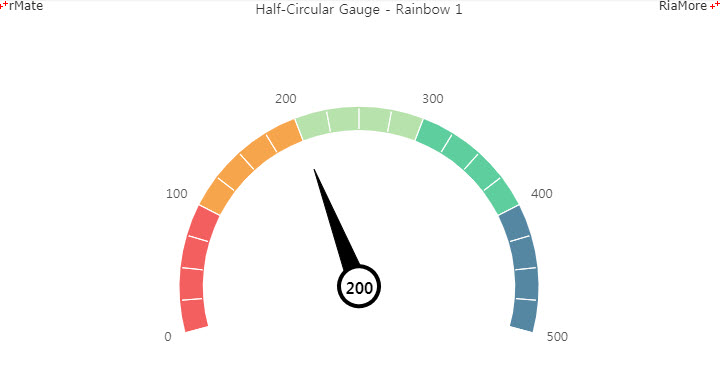
See the CodePen 알메이트 차트 - 반원형 게이지
다음은 트랙의 레이블에 텍스트를 표시하는 반원형 게이지의 예제입니다.
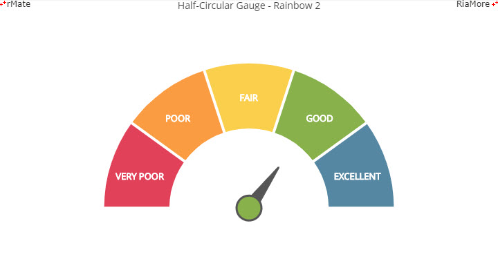
See the CodePen 알메이트 차트 - 반원형 게이지 - 트랙의 레이블에 텍스트 표시
다음은 트랙에 눈금과 텍스트를 표시하는 반원형 게이지의 예제입니다.
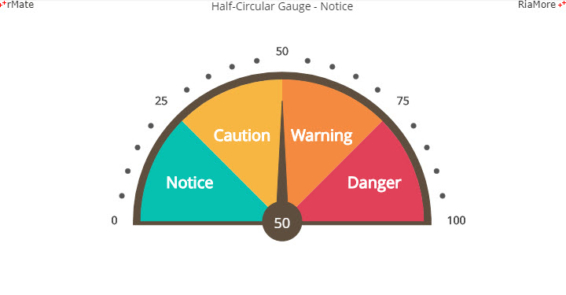
See the CodePen 알메이트 차트 - 반원형 게이지 - 트랙에 눈금과 텍스트 표시
수평 게이지
수평 게이지는 가로 직사각형 형태로 표현되며, 실린더형과 직선형이 지원됩니다.
실린더형 수평 게이지는 <HCylinderGauge> 노드를 설정하여 생성하고, 직선형 수평 게이지는 <HLinearGauge> 노드를 설정하여 생성합니다.
다음은 수평 게이지를 표현한 예제입니다.
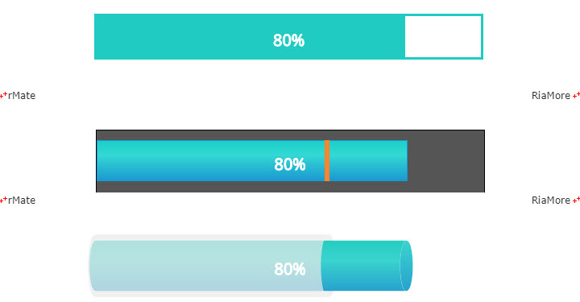
See the CodePen 알메이트 차트 - 수평 게이지
수직 게이지
수직 게이지는 세로 직사각형 형태로 표현되며, 실린더형과 직선형이 지원됩니다.
실린더형 수직 게이지는 <VCylinderGauge> 노드를 설정하여 생성하고, 직선형 수직 게이지는 <VLinearGauge> 노드를 설정하여 생성합니다.
수평/수직 게이지는 보통 목표값에 대비한 실적값의 달성 정도를 표현합니다.
실린더형에서는 실적값을 안쪽 실린더의 길이로 표현하고, 직선형에서는 안쪽 막대의 길이로 표현합니다.
다음은 수직 게이지를 표현한 예제입니다.
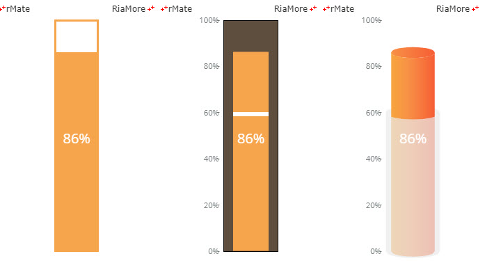
See the CodePen 알메이트 차트 - 수직 게이지